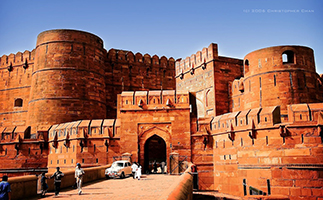

|
|
Agra is a city on the banks of the river Yamuna in the northern state of Uttar Pradesh, India. It is 363 kilometres west of the state capital, Lucknow, 200 kilometres (124 mi) south of the national capital New Delhi and 125 kilometres (78 mi) north of Gwalior . With a population of 1,686,976 (2010 est.), it is one of the most populous cities in Uttar Pradesh and the 19th most populous in India.Agra can also refer to the administrative district that has its headquarters in Agra city. It is a major tourist destination because of its many splendid Mughal-era buildings, most notably the Taj Mahal, Agra Fort and Fatehpur Sikri, all three of which are UNESCO World Heritage Sites. Agra is included on the Golden Triangle tourist circuit, along with Delhi andJaipur. The city is mentioned in the epic Mahabharata, where it was called Agrevana ("the border of the forest").Legend ascribes the founding of the city to Raja Badal Singh, a Sikarwar Rajput king, whose fort, Badalgarh, stood on or near the site of the present fort. However, the 11th century Persian poet Salman writes of a desperate assault on the fortress of Agra, then held by the Shahi King Jayapala, by Sultan Mahmud of Ghazni.[4] Sultan Sikandar Lodi was the first to move his capital fromDelhi to Agra in 1506. He died in 1517 and his son, Ibrahim Lodi, remained in power there for nine more years, finally being defeated at the Battle of Panipat in 1526.[5] Between 1540 and 1556, Afghans, beginning with Sher Shah Suri ruled the area. It achieved fame as the capital of the Mughal Empire from 1556 to 1658. |